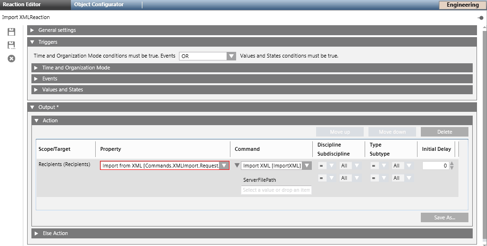
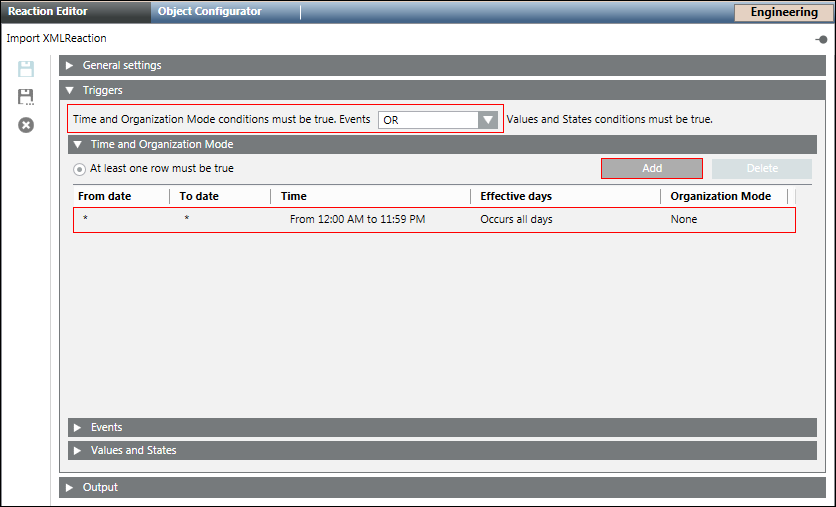
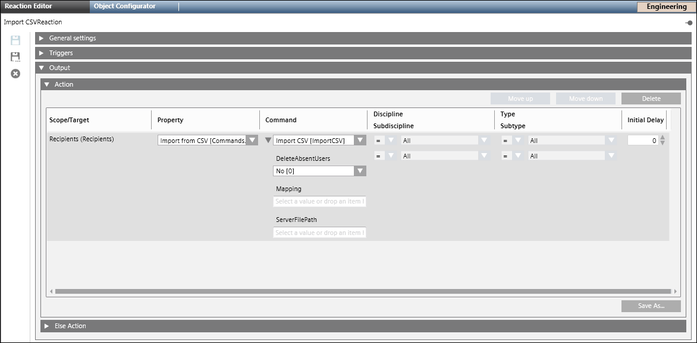
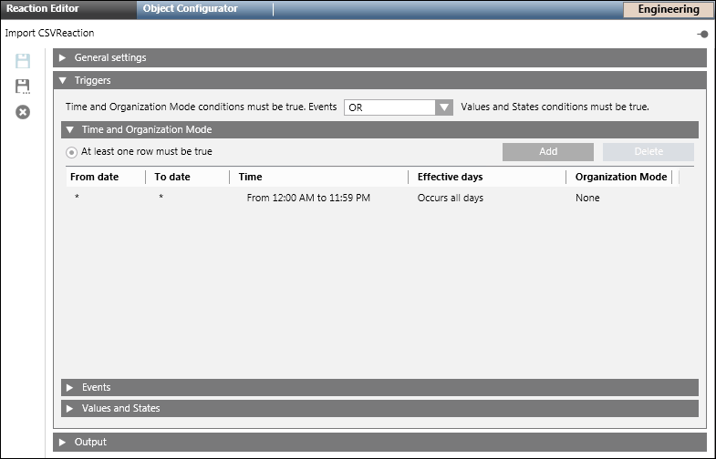
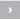
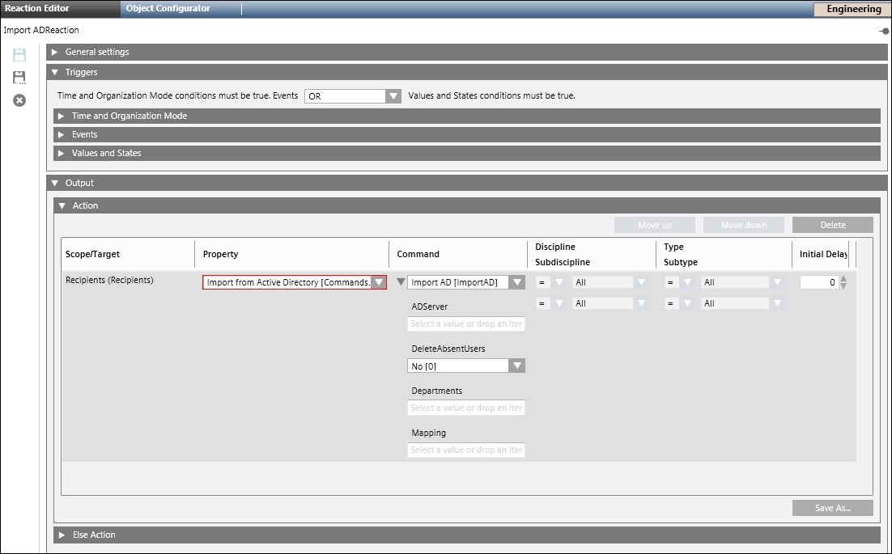

Import Recipients
This section contains procedures for importing recipients.
Import Recipients from XML
The import feature is disabled for Windows App client.
- Select Applications > Notification > Recipients.
- The Recipients Editor tab displays.
- Select the Import tab.
- Select the Import from XML expander, click Browse.
- The Open dialog box displays.
- Select the location where the xml file is stored.
- Select the xml file.
- Click Open.
- The path of the xml file displays in the Import file field.
- Click Import.
NOTE: XML format is meant for system to system import of recipients. The selected xml file is imported.
Import Recipients from XML using Command
- Select Applications > Notification > Recipients.
- The Recipients Editor tab displays.
- Select the Extended Operation tab.
- Click Import XML to enable the import options.
- In the File Path field, enter the local XML file path of the server.
- Click Send.
- The XML file specified in the file path is imported.
Import Recipients from XML using Reactions
- Select Applications > Logics > Reactions.
- The Reaction Editor tab displays.
- Drag the Recipients node from Applications > Notification > Recipients onto the Action expander of the Output expander.

- From the Property drop-down list, select Import XML[Commands.XMLImport.Request.Import].
- Select the ImportXML[ImportXML] command to execute.
- In the ServerFilePath field, enter the local XML file path of the MNS server.
- Open the Triggers expander, and from the drop-down list, select the appropriate logical operator (AND, OR).
- Open the Time and Organization mode expander.
- Click Add to add a new time row and enter a new time or schedule that periodically triggers the Import XML command.

- Click Save As and enter the name and description for the Import XML reaction.
- The new Import XML reaction displays in the System Browser.
Configure Mappings for CSV Import
Before configuring the CSV mapping, the user first needs to determine three properties of the CSV files that the user is importing:
- Header row: The first row in a CSV file may contain column names. If a header row is present, columns can be referenced by name in the CSV mapping. Otherwise, columns will need to be referenced by their index (position) in the CSV file.
- Delimiter: A certain character that delimits two values in a CSV file. Notification supports commas, semicolons, spaces and tabs as delimiter.
- Quotation mark: Surrounding individual values with quotation marks allows the use of delimiter characters within values. Notification supports single quotes and double quotes as quotation marks.
NOTE 1:
CSV files exported from Excel by default have the following properties:
Header row: Yes
Delimiter: Comma
Quotation mark: Double quote.
NOTE 2:
If the character used as quotation mark appears within quoted values, the character must be escaped by doubling the corresponding character. This escaping process is typically performed by the process that creates a CSV file from a data source.

- Do the following to create a new import mapping:
a. Click New: The Create mapping as dialog box displays.
b. Enter a name for mapping in the Create mapping as dialog box.
c. Click OK: The Mapping field is populated with the name specified for the mapping.
d. Select the Header row check box if the user want to specify a title for the CSV file.
e. Select a separator from the Delimiter drop-down list.
f. In the Columns section, map a CSV Column with a notification property. For mapping, select a CSV column option from the CSV Column drop-down list and select a notification property for the corresponding CSV Column option from the Notification Property drop-down list. For example, Column 1(A) of CSV Column can be mapped to First Name of the Notification Property. You can correlate the alphabet A from the mapping column with the Microsoft Excel column header A, if Microsoft Excel is used to view the CSV file. Also, assign an individual recipient to the recipient group. To do this, select the appropriate CSV column from the CSV Column drop-down list and map to the recipient group from the Notification Property drop-down list.
NOTE 1: The recipient group to be used during import of CSV file must be first created in theNotification.
NOTE 2: The individual recipient will not be assigned to the recipient group if the corresponding value of the group in the CSV is either of the given values— "", " ", "0", "NO", or "FALSE". For values other than those mentioned above, the individual recipient will be assigned to the recipient group.
g. Select a quotation type from the Quotations drop-down list.
h. Click Save. - The mapping is configured.
NOTE: This configured mapping can be saved for future use. - Do the following to edit an existing mapping:
a. From the Mapping drop-down list, select the mapping.
b. Edit the required fields.
c. Click Save. - To select an existing mapping, select it from the Mapping drop-down list.
- Do the following for saving an existing mapping under a new name:
a. Select the mapping from the Mapping drop-down list.
b. Click Save as: The Save mapping as dialog box displays.
NOTE: By default, Copy of [Mapping Name] displays in the Save mapping as dialog box.
c. Enter a new name for the corresponding mapping.
d. Click OK.
e. Click Save.
Import Recipients from CSV
- Select Applications > Notification > Recipients.
- The Recipients Editor tab displays.
- Select the Import tab.
- Open the Import from CSV expander.
- Click Browse.
- The Open dialog box displays.
- Select the location where the CSV file is stored.
- Select the CSV file.
- Click Open.
- The path of the CSV file displays in the Import file field.
- Select the Delete absent recipients check box to delete the recipients in the Notification that are not present in the CSV file.
NOTE 1: Recipients created manually through the recipient UI will never be deleted during CSV import.
NOTE 2: The mapping name is used as one of the criteria to delete recipient users hence when user deletes the mapping, a warning message displays. - Click Import.
- The selected CSV file is imported.
NOTE: If imported recipient users need to be updateable through subsequent imports, the Unique ID property under the Notification property needs to be mapped to a CSV column that contains values that uniquely identify recipient users, like an employee ID.
Import Recipients from CSV using Command
- Select Applications > Notification > Recipients.
- The Recipients Editor tab displays.
- Select the Extended Operation tab.
- Click the Import CSV link to enable the import options.
- The Delete Users, Mapping, File Path fields and Send displays.
- Select the appropriate value (Yes or No) from the Delete Users check box.
- Enter the mapping to be used for the CSV import in the Mapping field.
- In the File Path field, enter the local CSV file path of the Notification server.
- Click Send.
- The CSV file specified in the file path is imported.
Import Recipients from CSV using Reaction
- Select Applications > Logics > Reactions.
- The Reaction Editor tab displays.
- Drag the Recipients node from Applications > Notification > Recipients onto the Action expander of the Output expander.

- Select Import CSV[Commands.CSVImport.Request.Import] from the Property drop-down list.
- Select ImportCSV[ImportCSV] command to execute.
- Select the appropriate value (Yes or No) from the DeleteAbsentUsers list box.
- Enter the mapping to be used for the CSV import in the Mapping field.
- In the ServerFilePath field, enter the local CSV file path of the Notification server.

- Open the Triggers expander.
- From the drop-down list, select the appropriate logical operator (AND, OR).
- Open Time and Organization Mode expander.
- Click Add to add a new time row and enter a new time or schedule that periodically triggers the Import CSV command.
- Click Save As and enter the name and description for the Import CSV Reaction.
- The new Import CSV Reaction displays in the System Browser.
Configure Mappings for an Active Directory Import
- To create a new import mapping, click New.
- In the Create mapping as dialog box that displays, enter a name for mapping and click OK.
- The Mapping field is populated with the name specified for the mapping.
- In the Columns section, map an Active Directory property with a Notification property by either selecting an Active Directory property from the drop-down list or by entering an Active Directory property manually in the Active Directory Property field. For example, First name of the Active Directory Property can be mapped to First Name of Notification Property.
NOTE: Each Active Directory property has a real name and a display name, for example, givenName is the real name of an Active Directory property with display name as First name. The properties listed in the Active Directory Property drop-down list are the display names of the real Active Directory properties. If user wants to use any property not listed in the drop-down list then type the real name of the Active Directory property. In order to get the real name of the Active Directory property, a tool which shows real Active Directory property name and its display name must be used, for example, Remote Server Administration Tools for Windows 7. - Click Save.
NOTE: An error message displays if there are invalid entries in the Active Directory properties mapping. In such scenarios, click OK. Rectify the error and click Save. - The mapping is configured.
- Do the following for editing an existing mapping:
a. Select the mapping from the Mapping drop-down list.
b. Edit the required fields.
c. Click Save. - To select an existing mapping, select it from the Mapping drop-down list.
- Do the following for saving an existing mapping under a new name:
a. Select the mapping from the Mapping drop-down list.
b. Click Save As: The Save mapping as dialog box displays.
NOTE: By default, Copy of [Mapping Name] displays in the Save mapping as dialog box.
c. Enter a new name for the corresponding mapping.
d. Click OK.
e. Click Save.
Import Recipients from Active Directory
- Select Applications > Notification > Recipients.
- The Recipients Editor tab displays.
- Select the Import tab.
- Open the Import from Active Directory expander.
- Enter the Active Directory server's address in the Server field.
- Click Connect.
- The list of the departments available in the corresponding Active Directory displays in the Available departments section.
- Select the departments to be imported.
NOTE: Search for the department by typing in the department’s name in the Search field. - For importing departments, select an individual department from the Available departments section and click

to move the department to the Departments to import section. - To move departments from the Departments to import section to the Available departments section, select an individual department from the Departments to import section and click to move the department to the Available departments section.
- Select the Delete absent recipients check box to delete the recipients in the Notification that are not present in the Active Directory.
NOTE 1: Recipients created manually through the recipient UI will never be deleted during Active Directory import.
NOTE 2: The mapping name is used as one of the criteria to delete recipient users hence when user deletes the mapping, a warning message displays. - Click Import.
- The selected departments are imported.

NOTE:
If imported recipient users need to be updateable through subsequent imports, the Unique ID property under Notification Property needs to be mapped to an Active Directory Property that contains values that uniquely identify recipient users, like an employee ID.
Import Recipients from Active Directory using Command
- Select Applications > Notification > Recipients.
- The Recipients Editor tab displays.
- Select the Extended Operation tab.
- Click the Import AD link to enable the import options.
- The AD Server, Delete Users, Departments, Mapping fields and Send button display.
- Enter the Active Directory server address in the AD Server field.
- Select the appropriate value (Yes or No) from the Delete Users list to delete recipients from Notification that are not present in the Active Directory.
- Enter the department name to import. Multiple department names can be entered by using the comma separator.
- Enter the mapping to be used for importing the Active Directory in the Mapping field.
- Click Send.
- The selected departments are imported.
Import Recipients from Active Directory using Reaction
- Select Applications > Logics > Reactions.
- The Reaction Editor tab displays.
- Drag the Recipients node from Applications > Notification > Recipients onto the Action expander of the Output expander.

- Select Import from Active Directory[Commands.ADImport.Request.Import] from the Property drop-down list.
- In the ADServer field, enter the server address of the Active Directory to import.
- Select the appropriate value (Yes, No) from the DeleteAbsentUsers list box.
- In the Departments field, enter the department name.
NOTE: Multiple department names can be entered by using a comma separator. - In the Mapping field, enter the mapping to be used for the AD import.
- Open the Triggers expander. From the drop-down list, select the appropriate logical operator (AND, OR).
- Open the Time and Organization Mode expander.
- Click Add to add a new time row and enter a new time or schedule that periodically triggers the Import From Active Directory command.
- Click Save As and enter the name and description for the Import Active Directory Reaction.
- The new Import Active Directory Reaction displays in System Browser.
Delete a CSV Mapping
- One or more CSV mappings are present.
- Select the mapping from the Mapping drop-down list.
- Click Delete.
- The selected mapping is deleted.
Delete an Active Directory Mapping
- One or more Active Directory mappings are present.
- Select the mapping from the Mapping drop-down list.
- Click Delete.
- The selected mapping is deleted.